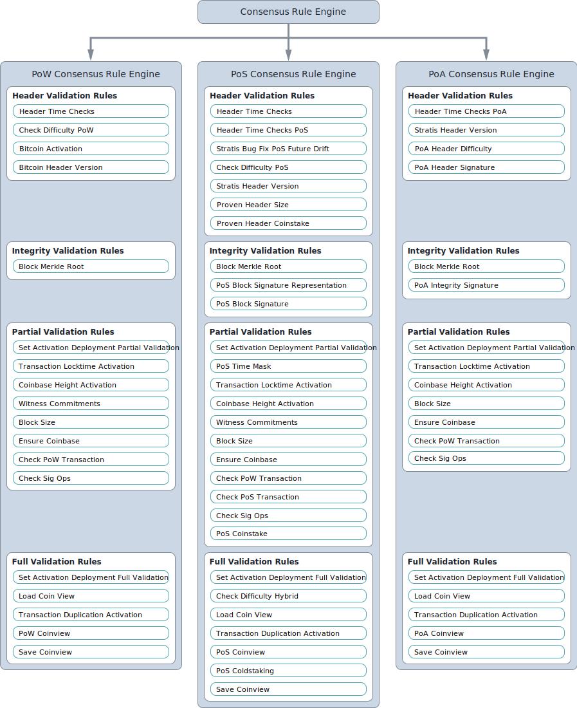

Customizing consensus rule engines and their rulesets¶
The purpose of this chapter is to explore how consensus rule engines (and the rulesets they define) are used, customized, and registered on the Stratis Full Node.
How a consensus rule engine works¶
Custom consensus rule engines inherit from the ConsensusRuleEngine class. The HeaderValidator, IntegrityValidator, PartialValidator, and the FullValidator singletons call methods from the IConsensusRuleEngine base class, which are responsible for executing rule sets. The ConsensusRuleEngine base class implements the IConsensusRuleEngine interface, and because the implementations of these functions are virtual, it is possible, but not always necessary, to override them in the custom rules engine. For example, PowConsensusRuleEngine class overrides FullValidationAsync() and implements some code that processes the result returned from running the base version of FullValidationAsync():
public override async Task<ValidationContext> FullValidationAsync(ChainedHeader header, Block block)
{
ValidationContext result = await base.FullValidationAsync(header, block).ConfigureAwait(false);
if ((result != null) && (result.Error == null))
{
// Notify prefetch manager about block that was validated so prefetch manager
// can decide what coins we will most likely need for full validation in the near future.
this.prefetcher.Prefetch(header);
}
return result;
}
Depending on your requirements, you might find it useful to inherit from one of the existing custom rule engines, so it is worth exploring how they are customized. For example, both PosConsensusRuleEngine and PoAConsensusRuleEngine inherit from PowConsensusRuleEngine. You can always override the function implementations you do not want and keep or expand on those that you do. Custom rule engines also provide an opportunity to make objects available to the rules themselves. For example, the SlotsManager and PoABlockHeaderValidator singletons, which are instances of classes specific to the PoA algorithm, are properties of PoAConsensusRuleEngine:
public class PoAConsensusRuleEngine : PowConsensusRuleEngine
{
public SlotsManager SlotsManager { get; private set; }
public PoABlockHeaderValidator poaHeaderValidator { get; private set; }
...
}
Next, let’s take a look at the code which executes the rules one by one. There are two private functions in ConsensusRulesEngine that do this. The first is ExecuteRules(), which executes the two sets of rules that need to be executed synchronously (header and integrity validation):
private void ExecuteRules(IEnumerable<SyncConsensusRule> rules, RuleContext ruleContext)
{
try
{
ruleContext.SkipValidation = ruleContext.ValidationContext.ChainedHeaderToValidate.IsAssumedValid;
foreach (SyncConsensusRule rule in rules)
{
using (this.performanceCounter.MeasureRuleExecutionTime(rule))
{
rule.Run(ruleContext);
}
}
}
catch (ConsensusErrorException ex)
{
ruleContext.ValidationContext.Error = ex.ConsensusError;
}
catch (Exception exception)
{
this.logger.LogCritical("Unhandled exception in consensus rules engine: {0}.", exception.ToString());
throw;
}
}
In ExecuteRules(), you can see the rules are passed in as a list of SyncConsensusRule objects, which the integrity and header validation rules inherit from. Because of this, ExecuteRules() is capable of processing any synchronous rule.
All asynchronous rules (the partial and full validation rulesets) are processed by ExecuteRulesASync(), which receives a list of AsyncConsensusRule() objects:
private async Task ExecuteRulesAsync(IEnumerable<AsyncConsensusRule> asyncRules, RuleContext ruleContext)
{
try
{
ruleContext.SkipValidation = ruleContext.ValidationContext.ChainedHeaderToValidate.IsAssumedValid;
foreach (AsyncConsensusRule rule in asyncRules)
{
using (this.performanceCounter.MeasureRuleExecutionTime(rule))
{
await rule.RunAsync(ruleContext).ConfigureAwait(false);
}
}
}
catch (ConsensusErrorException ex)
{
ruleContext.ValidationContext.Error = ex.ConsensusError;
}
catch (Exception exception)
{
this.logger.LogCritical("Unhandled exception in consensus rules engine: {0}.", exception.ToString());
throw;
}
}
Defining your own rules¶
You need to implement either the SyncConsensusRule::Run() and AsyncConsensusRule::RunAsync() abstract functions for any rules that you create. However, rules should in fact inherit from either HeaderValidationConsensusRule, IntegrityValidationConsensusRule, PartialValidationConsensusRule, or FullValidationConsensusRule to be future proof. These four classes do not implement any methods and the interfaces they support do not define any although this may change in the future. Here you can find more information about the implementations of these base rule classes and the declarations of the interfaces they support.
The following image shows the four rulesets for each of the three consensus engines:
{kind=link}
The following table provides a brief description for each rule shown in the figure:
Rule |
Description |
|---|---|
Bitcoin Activation |
Checks that the block is a new enough version for any active deployments the network has upgraded to. |
Bitcoin Header Version |
Does nothing currently. Any block version is valid for the Bitcoin network unless the Bitcoin Activation rule detects a problem. |
Block Merkle Root |
Checks that the block’s merkle tree root matches the merkle tree root stored in the block header. |
Block Size |
Checks that the block’s weight does not exceed the limit and that the block size in bytes is not too large. |
Check Difficulty Hybrid |
Checks that the block hash (calculated using either PoW or PoS) hits the target at the required difficulty. To hit the target, the hash must be less or equal to the target. |
Check Difficulty PoS |
Checks that the correct difficulty was used (on a PoS network) when comparing the block’s hash against the target. |
Check Difficulty PoW |
Checks that the correct difficulty was used (on a PoW network) when comparing the block’s hash against the target. |
Check PoS Transaction |
Checks that each transaction in a PoS block is valid. |
Check PoW Transaction |
Checks that each transaction in a PoW block is valid. |
Check Sig Ops |
Checks that the block does not have too many signature check operations. |
Coinbase Height Activation |
Check that the block’s height is serialized in the script language if BIP34 is being enforced. |
Ensure Coinbase |
Checks that the block has the required single coinbase transaction. |
Header Time Checks |
Checks that the block timestamp is greater then the consensus tip timestamp and not more than two hours in the future. |
Header Time Checks PoA |
Checks that a PoA block timestamp is greater than the previous block’s timestamp, is not too far in the future, and is a valid timeslot which respects the target spacing. |
Header Time Checks PoS |
Checks that a PoS block timestamp is greater than the previous block’s timestamp. |
Load Coin View |
Checks that the value the block has stored for the previous block’s hash matches the hash of the consensus tip’s block. Next it loads the UTXO set for the block. |
PoA Coinview |
Checks the UTXO set from a PoA perspective. |
PoA Header Difficulty |
Checks that a PoA block has specific difficulty which is common across all blocks on a PoA network. |
PoA Header Signature |
Checks that a PoA block is signed with the expected federation member’s public key (based on the timeslot it was written in). |
PoA Integrity Signature |
Checks that a PoA block’s signature matches the signature of the header used to intiate its download. |
PoS Block Signature |
Checks that the signature for a PoS block is valid. |
PoS Block Signature Representation |
Checks that the signature for a PoS block is in the canonical format. |
PoS Coinstake |
Checks that a PoS block contains a single coinstake transaction has no coinbase transaction and has no transactions with a timestamp after the block timestamp. |
PoS Coinview |
Checks the UTXO set from a PoS perspective including stake checking. |
PoS Coldstaking |
Checks a PoS block to see if the coinstake transaction is cold and if so performs checks to see whether the transaction is a valid cold coinstake. |
PoS Time Mask |
Checks that a PoS block coinstake transaction’s timestamp matches the block timestamp and that the timestamp is divisible by 16 seconds. A time of 16 seconds applies for the Stratis mainchain although this can be customised for another blockchain without adjusting the rule. |
PoW Coinview |
Checks that the UTXO set from a PoW block’s transactions contain correctly spent inputs and correctly created new outputs. |
Proven Header Coinstake |
Checks that the coinstake transaction supplied with a proven header is valid. |
Proven Header Size |
Checks that a proven header’s serialized components are not greater than the maximum size permitted. |
Save Coinview |
Saves the changes made to the coinview if required. |
Set Activation Deployment Full Validation |
Not a rule. Sets an instance of |
Set Activation Deployment Partial Validation |
Not a rule. Sets an instance of |
Stratis Bug Fix PoS Future Drift |
Makes sure that the block timestamp is not more than 15 seconds in the future. Also protects against a the effects of a bug that has now been fixed. |
Stratis Header Version |
Checks that the block version is valid for the Stratis network. |
Transaction Duplication Activation |
Checks that the block does not contain duplicate transactions. |
Transaction Locktime Activation |
Checks that the block’s transactions are all finalized using a median of the last 11 blocks instead of the block’s timestamp. |
Witness Commitments |
Checks that witness commitments for the block are expected and valid. |
You can find the source code for most of the rules, including the proven header rules, under Stratis.Bitcoin.Features.Consensus/Rules. The code for the rules specific to the PoA algorithm is found here.
Rules may inherit from other rules in much the same way one custom rule engine can inherit from another. For example, PosCoinViewRule inherits from CoinViewRule. You can also define abstract classes with abstract methods for specific groups of rules. For example, ProvenHeaderRuleBase provides some utility proven header checks and modifies the Run() function to carry out some preliminary checks on any headers sent to a class based on it.
For an example of a rule, let’s look at the code for BlockSizeRule.RunAsync():
public override Task RunAsync(RuleContext context)
{
if (context.SkipValidation)
return Task.CompletedTask;
var options = this.Parent.Network.Consensus.Options;
// After the coinbase witness nonce and commitment are verified,
// we can check if the block weight passes (before we've checked the
// coinbase witness, it would be possible for the weight to be too
// large by filling up the coinbase witness, which doesn't change
// the block hash, so we couldn't mark the block as permanently
// failed).
if (this.GetBlockWeight(context.ValidationContext.BlockToValidate, options) > options.MaxBlockWeight)
{
this.Logger.LogTrace("(-)[BAD_BLOCK_WEIGHT]");
ConsensusErrors.BadBlockWeight.Throw();
}
Block block = context.ValidationContext.BlockToValidate;
// Size limits.
if ((block.Transactions.Count == 0) || (block.Transactions.Count > options.MaxBlockBaseSize) ||
(GetSize(this.Parent.Network, block, TransactionOptions.None) > options.MaxBlockBaseSize))
{
this.Logger.LogTrace("(-)[BAD_BLOCK_LEN]");
ConsensusErrors.BadBlockLength.Throw();
}
return Task.CompletedTask;
}
You can see that an instance of the RuleContext class is passed as a parameter. It is worth familiarizing yourself with the information available in this class. Notice that the first thing that the function does is to refer to the context to check if this rule is even required.
Next, the block weight is checked to see if it is greater than the maximum block weight allowed using a helper function, GetBlockWeight(), which is defined in the class. If the block weight exceeds the maximum allowed, a BadBlockWeight consensus error is thrown. You can examine the static ConsensusErrors class to see the ConsensusError objects already defined. Each of the objects can be used to throw an exception, and you may need to expand the existing list to provide exception messages for the rules you create.
Finally, the block checks if the block has exceeded the maximum block size allowed and if this is the case, an error is thrown.
Note
Exploring the proven header rules in detail takes an in-depth look at how the proven header rules are implemented.
Consensus options¶
A class that defines the consensus options is available for each consensus algorithm. PoAConsensusOptions and PoSConsensusOptions classes inherit from ConsensusOptions, which is used for the PoW algorithm. The instance of one of these classes, which is available at ConsensusRuleEngine.Network.Consensus.Options, is created when the custom network object (BitcoinMain, StratisMain, or PoANetwork) is created for the Full Node.
If you want to add access to consensus options that are easily modifiable, and at the same time, available to each rule defined, you need to create a custom consensus options class and make sure it is assigned to Network.Consensus.Options. Although it is outside the scope of this document, you may well be creating a custom network class anyway.
Registering consensus features¶
You may find it useful to read Creating custom builds and extending the feature set before reading this section.
Full Node features need to be registered before they can be included in a Full Node build. As you have seen, the Consensus features available consist of consensus rules and an engine that processes them (the three different algorithms you have looked at). Therefore, if you make customizations to an engine and its rulesets, you must create a customized feature, which will enable this new option to be registered. The extension methods used to register the PoW and PoS Consensus features are found in FullNodeBuilderConsensusExtension.cs, while the extension method used to register the PoA Consensus feature is found in PoAFeature.cs. As when customizing the consensus engine itself, you may find it easier to adapt the code that registers one of the existing algorithms.
Let’s assume you chose to customize the PoW Consensus Engine. In this case, we need to take a look at the code for UsePowConsensus():
public static IFullNodeBuilder UsePowConsensus(this IFullNodeBuilder fullNodeBuilder)
{
LoggingConfiguration.RegisterFeatureNamespace<PowConsensusFeature>("powconsensus");
fullNodeBuilder.ConfigureFeature(features =>
{
features
.AddFeature<PowConsensusFeature>()
.FeatureServices(services =>
{
services.AddSingleton<ConsensusOptions, ConsensusOptions>();
services.AddSingleton<DBreezeCoinView>();
services.AddSingleton<ICoinView, CachedCoinView>();
services.AddSingleton<ConsensusController>();
services.AddSingleton<IConsensusRuleEngine, PowConsensusRuleEngine>();
services.AddSingleton<IChainState, ChainState>();
services.AddSingleton<ConsensusQuery>()
.AddSingleton<INetworkDifficulty, ConsensusQuery>(provider => provider.GetService<ConsensusQuery>())
.AddSingleton<IGetUnspentTransaction, ConsensusQuery>(provider => provider.GetService<ConsensusQuery>());
new PowConsensusRulesRegistration().RegisterRules(fullNodeBuilder.Network.Consensus);
});
});
return fullNodeBuilder;
}
The first step is to check the PowConsensusFeature class and rename and modify it/subclass it as required. You must also remove the line that adds PowConsensusRuleEngine as a singleton and insert a line that adds your customized engine instead. Notice that an instance of the PowConsensusRulesRegistration is created and its RegisterRules() method is called. Let’s take a look at this class and the method:
public class PowConsensusRulesRegistration : IRuleRegistration
{
public void RegisterRules(IConsensus consensus)
{
consensus.HeaderValidationRules = new List<IHeaderValidationConsensusRule>()
{
new HeaderTimeChecksRule(),
new CheckDifficultyPowRule(),
new BitcoinActivationRule(),
new BitcoinHeaderVersionRule()
};
consensus.IntegrityValidationRules = new List<IIntegrityValidationConsensusRule>()
{
new BlockMerkleRootRule()
};
consensus.PartialValidationRules = new List<IPartialValidationConsensusRule>()
{
new SetActivationDeploymentsPartialValidationRule(),
new TransactionLocktimeActivationRule(), // implements BIP113
new CoinbaseHeightActivationRule(), // implements BIP34
new WitnessCommitmentsRule(), // BIP141, BIP144
new BlockSizeRule(),
// rules that are inside the method CheckBlock
new EnsureCoinbaseRule(),
new CheckPowTransactionRule(),
new CheckSigOpsRule(),
};
consensus.FullValidationRules = new List<IFullValidationConsensusRule>()
{
new SetActivationDeploymentsFullValidationRule(),
// rules that require the store to be loaded (coinview)
new LoadCoinviewRule(),
new TransactionDuplicationActivationRule(), // implements BIP30
new PowCoinviewRule(), // implements BIP68, MaxSigOps and BlockReward calculation
new SaveCoinviewRule()
};
}
}
It should be clear how the rules for each ruleset are being built up. You must rename and modify this class so the rulesets include any customization you made to the rules. Rules which are not required should be removed from here and any completely new rules added.
If you made any adjustments to the code that writes the blocks, you will also need to make adjustments to either the PoW/PoS Mining Feature registration code or the mining-related PoA Feature registration code.